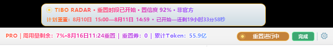
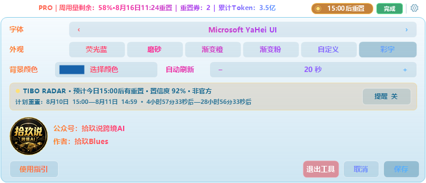
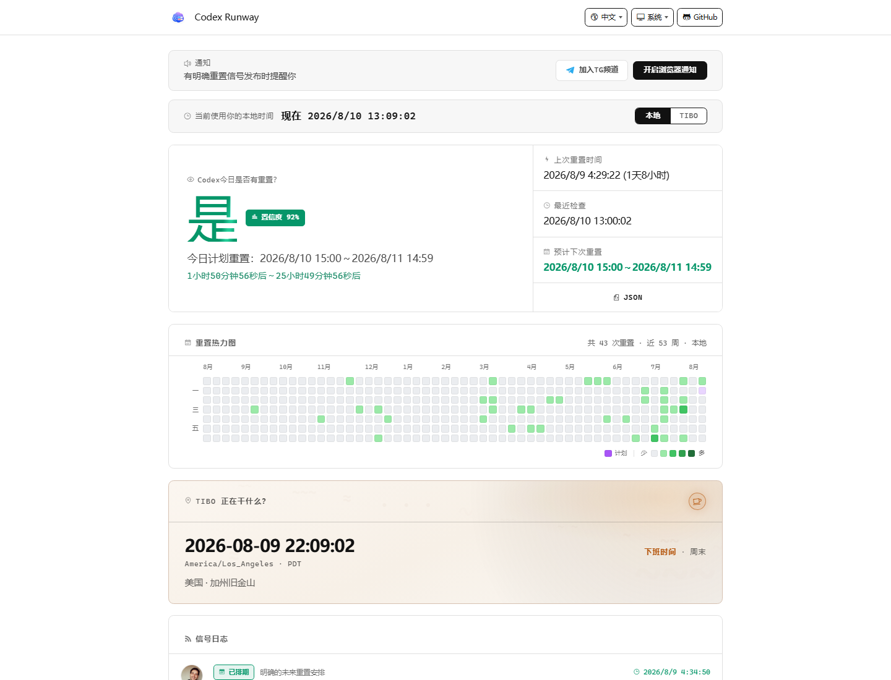

程序实机截图 · 2026-08-10 状态

周用量 · 重置时间 · Tibo Radar
Windows 顶部悬浮条
周用量 · 重置时间 · Tibo Radar
程序实机截图｜2026-08-10 状态
套餐、周用量、重置时间、重置券、累计 Token 和任务状态，都收进 Codex 窗口顶部这一行。
程序真实界面｜数值为固定演示值，不代表任何真实账户
把公开非官方预告转换为本地时间，并显示计划窗口与倒计时。预告窗不会把下面的主条向下挤偏。
点击右上角 ×，只隐藏当前会话的顶部预告窗。
点击主条里的加粗重置状态胶囊即可恢复。
点击预告窗主体，打开 Codex Runway 中文状态页。

全部截图由最终 v1.3.1 程序自身绘制代码重新导出。
官方 CLI / 桌面端随附的 app-server
套餐、额度、重置时间、重置券、累计 Token
只在本机窗口中展示
公开、非官方 JSON 状态源
时区、来源链接、事件类型与有效期
不发送账户令牌或本机额度
Codex Runway 中文页面用于监控并汇总 Tibo（@thsottiaux）的公开 X 信号，区分已排期与已完成事件，并转换为本地时间。

早点看预告，再决定什么时候用重置卡
程序实机截图，记录重置时段已开始时的界面状态
鼠标靠近才出现，不遮挡常驻信息。
“重置进行中”胶囊加粗，点击即可恢复顶部窗。
截图日期 2026-08-10 · 非实时。预告窗在主条上方，主条同步显示“重置进行中”。
截图由最终程序自身绘制代码重新导出｜固定演示数据
Windows 10 / 11 · v1.3.1 · AGPL-3.0
实际额度以本机 Codex 返回结果为准。